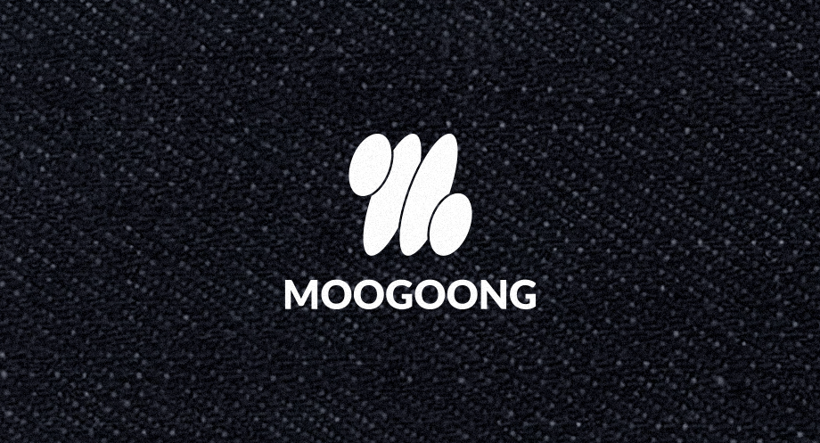
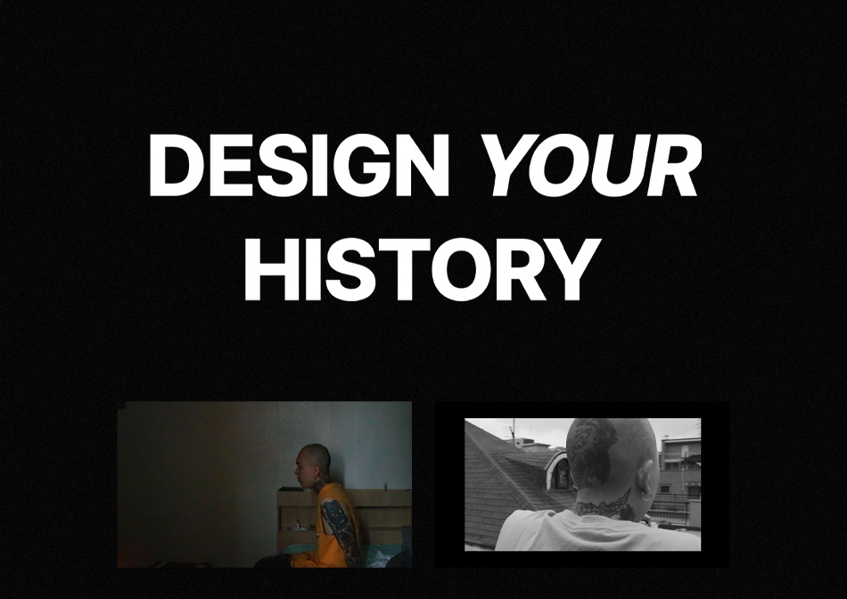
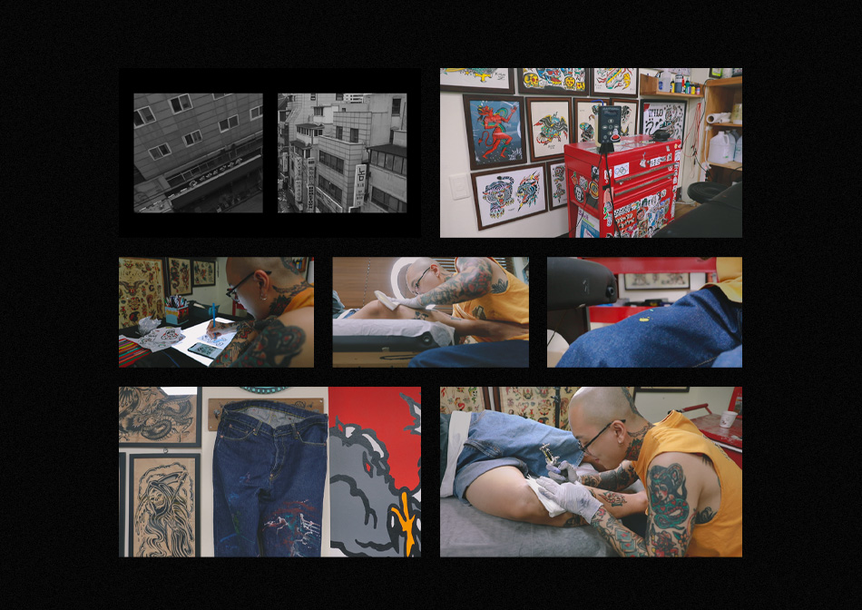
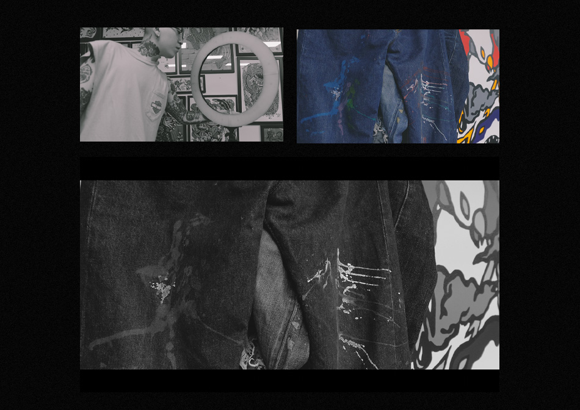

MOOGOONG은 한국어 ‘무궁무진(無窮無盡)’이라는 단어에서 착안해, 확장성과 변동성을 담은 데님 브랜드입니다.
셀비지 데님의 깊이 있는 기술력과 입을수록 페이딩되며 사용자에 맞춰지는 미학에 주목합니다.
동시에, 모던한 감성을 중시하는 현대 소비자들이 셀비지 데님에 자연스럽게 접할 수 있도록 재해석하였습니다.

영상의 주인공은 타투이스트 민영입니다.
영상은 민영이 타투이스트로서 갖는 직업에 대한 회고로 시작됩니다.

민영은 타투이스트로서 누군가의 추억, 생각, 의미 등을 지워지지 않는 타투라는 방식으로 표현하는 것에 의미를 둡니다.
작업하며 고객과 소통했던 일화들을 생각합니다. 그리고 타투를 하며 자연스럽게 청바지에 묻은 잉크에 대해 이야기합니다.
이런 지워지지 않는 추억들은 착용자의 생활이 페이딩되는 로우(raw) 데님의 특성과 연결됩니다.

타투와 청바지 모두 착용자의 의미를 새긴다는 점에서 닮은 점을 갖습니다.
Moogoong은 축적된 흔적이 곧 착용자의 개성이라는 메시지를 전합니다.
민영의 청바지 위 잉크는 의도되지 않은 흔적이지만, 그의 생활이 새겨지며 그를 상징하는 의미가 됩니다.
이러한 타투와 청바지의 공통점을 통해 브랜드 정체성을 강화하고, 시각적으로 강렬하게 이야기를 전달하고자 했습니다.